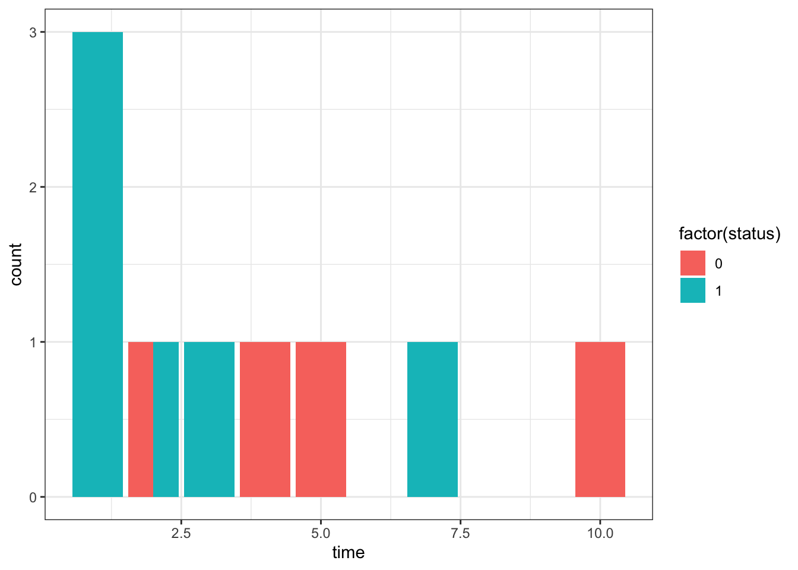
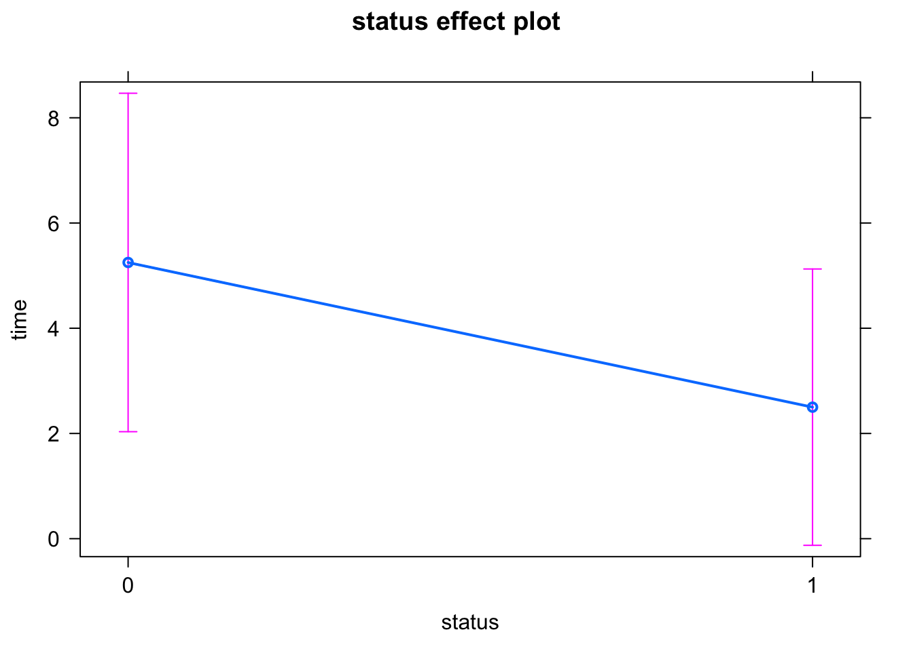
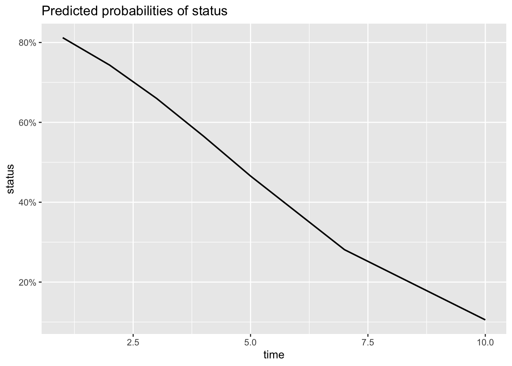
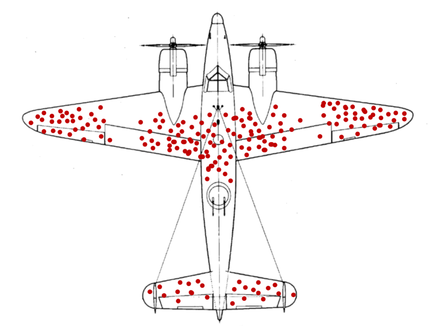
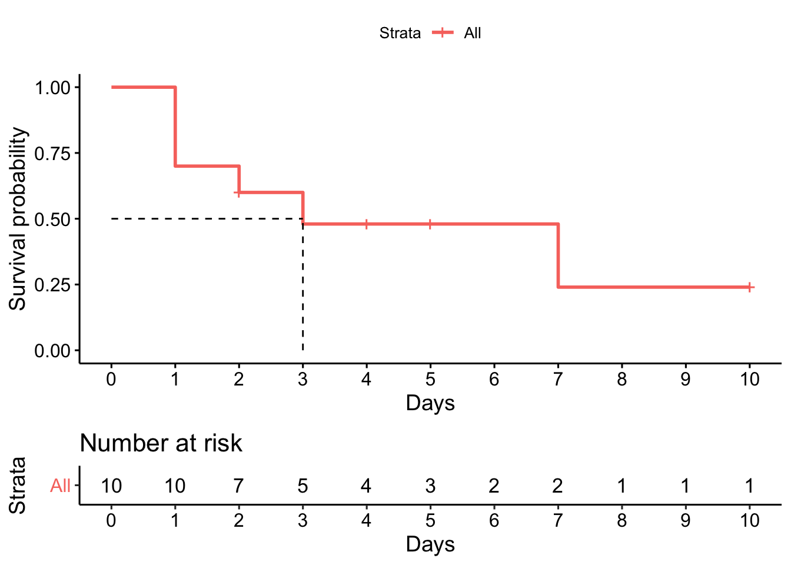
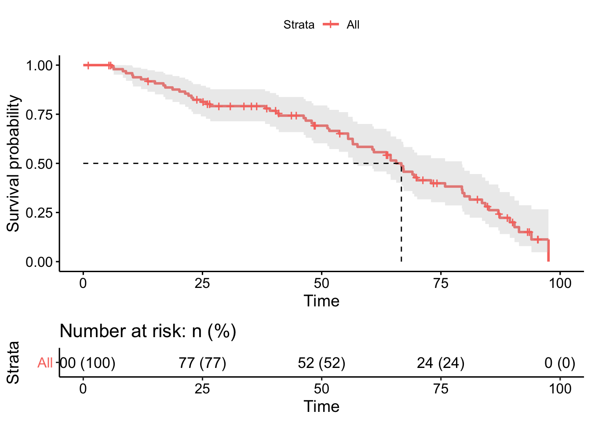
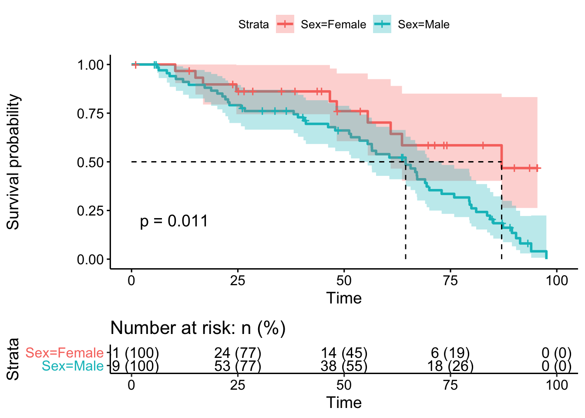
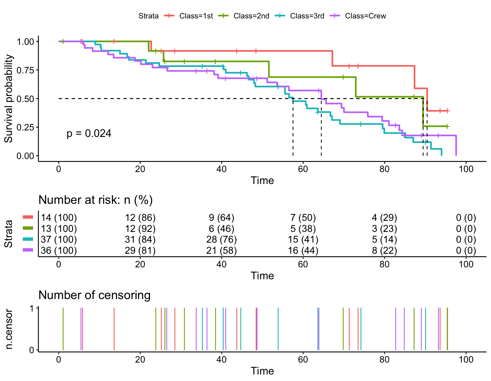
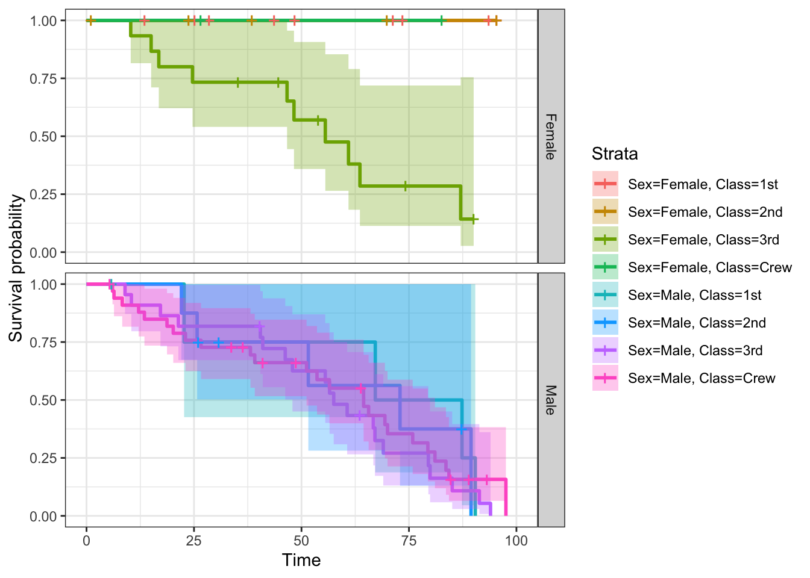

If you are more of a visual person, you can watch this post on YouTube, but for more details and R-code stay here.
Can there be something more horrifying, then a Titanic crash with lots of immediate deaths? Well, unfortunately, yes! Namely, not immediate deaths. Imagine survived people in the middle of the cold dark ocean, some in life jackets, some without, clinging on ship remains, with a huge panic and little hope for rescue. There will be no helicopter to save them (it’s 1912). There might not be a single ship in those waters for months. How long will they survive? Will time simply prolong their suffering or increase the probability of survival, because eventually they will be found by some random ship? Do women have higher chances of survival then men? What about rich vs. pure passengers? Well, in this post we’ll find answers to all of these questions and along the way learn how survival analysis works. Particularly, we will:
A good understanding of linear and logistic regressions would improve the digestion of this post.
library(tidyverse)
d <- tibble(
time = c(1,1,1,2,2,3,4,5,7,10),
status = c(1,1,1,1,0,1,0,0,1,0)
)
d %>% gt()| time | status |
|---|---|
| 1 | 1 |
| 1 | 1 |
| 1 | 1 |
| 2 | 1 |
| 2 | 0 |
| 3 | 1 |
| 4 | 0 |
| 5 | 0 |
| 7 | 1 |
| 10 | 0 |
To answer this question, let’s start with a small example of Titanic survivors: only 10 people and only 10 days on the sea after the crash and analyse it with the classic statistical methods, linear and logistic regressions. We are interested in how many people and how long survived and how many died on a particular day. Thus, two main parameters of interest for us are (1) time (in days) and (2) “life-status” of people, where “status = 1” means death and “status = 0” means not-death. And having the status of people we could just have counted survivors and not-survivors at each particular day to understand what was going on, wright?
ggplot(d, aes(time, fill = factor(status)))+
geom_bar(position = position_dodge())+
theme_bw()
Well, not quite. Besides, the fact that the plot with our counts is not particularly revealing, we have two problems with that:
The first one is that “status = 0” does not always mean a survival. First, the person might be carried away by the waves and disappear. We lost the person and we don’t know it’s status. It might have died, it might have been saved by a fisher boat or is still alive somewhere in the ocean. We are not sure. The only thing what we are sure about is that this person can not be counted as dead or survived. Secondly, if some people survived 10 days, they might die at day 11. So, the time plays a role here and brings us to the second problem.
We do not have the data for every of these 10 days. Only for 7. Moreover, if I did not eat anything for 5 days, my survival probability at day 5, where I certainly survived, is not 100%. It is lower, because hunger accumulates over time. Similarly, a decrease of my survival probability also accumulates over time, which can not be determined by a simple counting of survivors vs. not-survivors at a particular day.
Despite this problems we still can analyse these data. We only need to find the right method for it.
m <- lm(time ~ status, d %>% mutate(status = factor(status)))
library(effects)
plot(allEffects(m))
But when we plot the model results, we realize that something isn’t quite right there. All the information we have to model the survival time are zeros and ones. And the average time of dying (status = 1) of 2.5 days misses lot’s of information. For instance, half of the people (3 persons) died on the very first day! And the further we go in time, the less additional people die, which we can see on the very first counts-plot above. So, the survival time is not really linear and can certainly not be described with only zeros and ones! Thus, a linear model does not seem to be useful here. Then what is?
m <- glm(status ~ time, d, family = binomial)
library(sjPlot)
plot_model(m, type = "pred", ci.lvl = NA)## $time
Now we have the non-linear survival probabilities :), which is a great improvement as compared to a linear regression. However, the fifth observation has a status of 0 at day 2. This means that the person survived for 2 days for sure, but was lost after it. “So what?”, - you might ask. The probabilities in logistic regression would count this person as a 100% survivor after the second day simply because it’s status is not “=1”, which is wrong (or biased), since we don’t know whether this person survived. Thus, logistic regression overestimates survival probability and is therefore also an inappropriate tool to analyze survival data.
So, it looks like we can’t analyse survival data with classic methods. And that is exactly why we need survival analysis method.
While linear regression models describe the time, but miss a non-linear survival probability, logistic regression catches a non-linear trend, but overestimates survival probability. In contrast, survival analysis solves both issues, since it models non-linear survival probabilities over time while accounting for lost subjects of the study which are either dead nor survived.
Image by Luke Southern on unsplash.
Survival time analysis is necessary in any study which investigates the time to a particular outcome of interest. Cancer studies in the medicine and the first failure of the car in the engineering field (failure time analysis) are good examples. The outcome of interest could be death, remission to relapse, progression, or failure. Point in time of reaching that outcome is generally called the event. Thank goodness, not every “event” is fatal 😃, but can sometimes even be a favorable outcome such as discharge from hospital. And thus, survival analysis is also a generic term, because it is not only about survival.
The event, as a final fixed point in time is needed because we can’t observe or experiment forever. If we study lung cancer, we can’t wait until patients die from other causes, e.g. being old. Only when some of patients survive cancer, or some cars don’t break by a certain time (event), we can get valuable insights. For instance, what is the time from the start of the treatment to progression, or what is the probability to survive lung cancer after exactly 1 year? Moreover, it opens the possibility to compare survival or failure times among different groups, e.g. lung cancer between smokers and non-smokers, or breakdown time between German and Korean cars.
So, the survival time has a start and a finish point - the event. But what if a patient withdraw from the study due to a personal reasons, or a car got stolen 1 day before the event? Will they “survive” by the time of the event? We don’t know! But they certainly survived from the start of the study until the point we lost them. And this is a valuable information we surely want to include in our analysis! But how do we differentiate “lost” survivors from the “real” survivors? Well, we just call them a new name - censored. Strаnge word to apply to a person, right? But as I thought about the inappropriate information in a book or swearing on TV, which is often getting censored, the concept of censoring a patient became more digestible to me. See, since we can not say that person has died or is still alive, simply because we DO NOT HAVE ENOUGH INFORMATION, both of conclusions would be inappropriate, and thus, we censor this person. The concept of censoring is so important, that it deserves an extra chapter.
The need for censoring arises from the fact that the actual survival times will be unknown for some individuals. There are lots of ways to loose a subject of study:
All examples above are considered to be right censoring due to their direction from left to right on the time-axes. Most of survival data are right censored. There are two other kinds of censoring. Left censoring appears if we do not know where the sickness began, while interval censoring happens when the exact time of patient loss is not known, but only a time window. Both left and interval censorings are rare, difficult to analyse, are often a result of a bad study design, and thus, will not be covered here.
Important to remember is that censored observations still provide useful information! That is why they need to be included into analysis.
Imagine a peaceful sunny day right before the Titanic crash. No one has died, but all 10 people are at high risk (hazard) of death, they just don’t know it yet. Guess, how many people would probably die the day before the crash? The answer is - probably zero. Literally, the probability of dying is zero, because we know the crash will not happen the day before the actual crush. To answer this question more properly, we need to remember the definition of probability: Probabilities are ratios of something happening, to everything what can happen. Thus, if nobody out of all 10 people died the day before the crash, the probability of dying is 0%, while the probability of surviving is 100%:
\[ probability \ of \ dying = \frac{0}{10} = 0\]
\[ probability \ of \ surviving = \frac{10}{10} = 1 = 100\%\]
For a better representation, let’s put all the numbers in one single table:
tribble(
~time_in_days, ~N_at_risk, ~N_died, ~P_dying, ~`P_surviving`,
0, 10, 0, "0/10 = 0", "10/10 = 1"
) %>% kable()| time_in_days | N_at_risk | N_died | P_dying | P_surviving |
|---|---|---|---|---|
| 0 | 10 | 0 | 0/10 = 0 | 10/10 = 1 |
Then, at the day of the crash, where all 10 people are now know that they are at high risk of dying, 3 of them have actually died. The probability of dying at the first day is then \(3/10 = 0.3 \approx 30\%\) and the probability of surviving is \(7/10 = 0.7 \approx 70\%\). As you can see, the survival can be also calculated from the probability of dying \(1-0.3 = 0.7\), which is sometimes very useful.
One important moment here is that the probability of surviving is cumulative, which means it accumulates day by day. This accumulation happens via multiplying the new probability of surviving day 1 \((1 - \frac{d_i}{n_i}) = (1 - \frac{3}{10}) = 70\%\) by the old probability of surviving all the time before, which in our case is the day before the accident, or - day zero \(S(t_{i-1}) = 100\%\):
\[ S(t_i) = S(t_{i-1})*(1 - \frac{d_i}{n_i}) = 1 * (1 - \frac{3}{10}) = 0.7 \]
Where,
The survival probability at a certain time, \(S(t)\), is conditional because the person needs to have survived beyond that certain time, e.g. the zero day (that’s the condition) in order to remain in the experiment for the first day.
tribble(
~time_in_days, ~N_at_risk, ~N_died, ~P_dying, ~`P_surviving`,
0, 10, 0, "0/10 = 0", "10/10 = 1",
1, 10, 3, "3/10 = 0.3", "1 * (7/10) = 0.7",
) %>% kable()| time_in_days | N_at_risk | N_died | P_dying | P_surviving |
|---|---|---|---|---|
| 0 | 10 | 0 | 0/10 = 0 | 10/10 = 1 |
| 1 | 10 | 3 | 3/10 = 0.3 | 1 * (7/10) = 0.7 |
The second day is a little more interesting, because one person died and one simply disappeared (status = 0). This lost person was most likely carried away by the waves and hopefully was rescued. The hope is big, because the further people are scattered in the ocean, the higher the chances are that one of them will be found alive. And this one will let the world know that others are still out there. So, despite the fact that missing person seems bad, it might turn out to be a good thing. So, we certainly can not count a missed person as - dead. Besides, as a German proverb says: “Hope is the last to die” 😉.
But since we are also not sure whether this person is still alive, we can’t say - the person survived. That produces a dilemma: despite not being dead, the person is not part of our experiment anymore and we have to remove it from the number of people at risk. So, while the second day would have 7 people at risk left (since 3 have died at the very first day), the third day would be left with only 5 people, because 1 person died and one disappeared (was censored) as compared to day two. Similarly to the first day, the survival probability is cumulative and always includes the probability of the day before.
tribble(
~time_in_days, ~N_at_risk, ~N_died, ~P_dying, ~`P_surviving`,
0, 10, 0, "0/10 = 0", "10/10 = 1",
1, 10, 3, "3/10 = 0.3", "1 * (7/10) = 0.7",
2, 7, 1, "1/7 = 0.14", "0.7 * (6/7) = 0.6",
3, 5, 1, "1/5 = 0.20", "0.6 * (4/5) = 0.48"
) %>% kable()| time_in_days | N_at_risk | N_died | P_dying | P_surviving |
|---|---|---|---|---|
| 0 | 10 | 0 | 0/10 = 0 | 10/10 = 1 |
| 1 | 10 | 3 | 3/10 = 0.3 | 1 * (7/10) = 0.7 |
| 2 | 7 | 1 | 1/7 = 0.14 | 0.7 * (6/7) = 0.6 |
| 3 | 5 | 1 | 1/5 = 0.20 | 0.6 * (4/5) = 0.48 |
The next two days two people disappeared, so, we censor them. There is no need to calculate something for censored data in survival analysis, because we don’t know whether they survived or not. And since we are interested in either survival or death, the final table below contains only dead cases. At day 6 nobody died or disappeared, that is why we do not calculate anything for that day either. The last person in our experiment died at day 7. So, “N_died” will be 1, and “N_at_risk” will be 2, since 1 out of remaining 5 has died and 2 were censored. Thus, the full “manually” calculated table will look like this:
tribble(
~time_in_days, ~N_at_risk, ~N_died, ~P_dying, ~`P_surviving`,
0, 10, 0, "0/10 = 0", "10/10 = 1",
1, 10, 3, "3/10 = 0.3", "1 * (7/10) = 0.7",
2, 7, 1, "1/7 = 0.14", "0.7 * (6/7) = 0.6",
3, 5, 1, "1/5 = 0.20", "0.6 * (4/5) = 0.48",
7, 2, 1, "1/2 = 0.50", "0.48 * (1/2) = 0.24"
) %>% kable()| time_in_days | N_at_risk | N_died | P_dying | P_surviving |
|---|---|---|---|---|
| 0 | 10 | 0 | 0/10 = 0 | 10/10 = 1 |
| 1 | 10 | 3 | 3/10 = 0.3 | 1 * (7/10) = 0.7 |
| 2 | 7 | 1 | 1/7 = 0.14 | 0.7 * (6/7) = 0.6 |
| 3 | 5 | 1 | 1/5 = 0.20 | 0.6 * (4/5) = 0.48 |
| 7 | 2 | 1 | 1/2 = 0.50 | 0.48 * (1/2) = 0.24 |
But what happens if we ignore censoring and simply calculate the probability of being not dead? Well, since 4 people did not die on day 7, the probability of survival would be \(\frac{4}{10} = 40\%\) which is almost twice as high, and thus we’ll massively overestimate survival probability, as compared to the actual probability of 0.24 which accounts for censoring!
Story time:

Only paying attention to survivors even has a name - survivorship bias, and there is a small story to it. During the Second World War some planes came back from the battle field with a lot of damage from bullets. They barely could fly, but they still came back. So, the military decided to protect the aircraft with more armor at the places where the most bullet-holes were, like wings, and reduce the armor at the places with no bullet-holes. Surprisingly, the percentage of planes which came back did not increase. The engineers were puzzled! Until one mathematician, Abraham Walt, which were invited to solve this problem said: “Put more armor on places with no bullet-holes, because if these place are shot, the plane won’t come back.” And as the others thought about it, they realized that all the planes which came back did not have any bullet-holes on the cockpit or the engines. The bullet-holes shows all the places where the aircraft can be shot but still come back, or survive! That is the survivorship bias. So, it seems to me, that logistic regression has a survivorship bias as compared to the survival analysis if we wanna analyse survival data.
Load all needed packages at once to avoid interruptions.
library(tidyverse) # data wrangling and visualization
library(knitr) # beautifying tables
library(car) # for checking assumptions, e.g. vif etc.
library(broom) # for tidy model output
library(sjPlot) # for plotting results of log.regr.
library(sjmisc) # for plotting results of log.regr.
library(effects) # for probability output and plotsFirst of all, please, be sure you know exactly what 0s and 1s in your data mean! Because in a logistic regression 1 is the survival, while in a survival analysis 1 is death! Secondly, we have to differentiate censored cases somehow, e.g. we can mark them with a plus sign in the data or on the plot. The data below shows that people were censored on days 2+, 4+, 5+ and 10+. Install and load a survival package to be able to execute the code below:
# install.packages("survival")
library(survival)
Surv(time = d$time, event = d$status)## [1] 1 1 1 2 2+ 3 4+ 5+ 7 10+The Surv function unites “time” and “status” data into a single “survival” object, which allows to account for censored observations. This object can then be used to model survival probability by the survfit function. We model the survival by adding “~ 1” to the object, where 1 means no variables which could have influenced the survival. Our survival object on the left side of the tilde is then the response variable and on the right site of the ~ (tilde) are predictors, or in our case of “1” - nothing. Let’s produce our fist survival model and have a look at the model output:
survival_model <- survfit(Surv(time, status) ~ 1, data = d)
# small summary
survival_model## Call: survfit(formula = Surv(time, status) ~ 1, data = d)
##
## n events median 0.95LCL 0.95UCL
## 10 6 3 1 NAwhere we have:
Much more information can be assessed by the summary function, which, surprisingly 😉, delivers the same table which we just calculated above manually:
# big summary
summary(survival_model)## Call: survfit(formula = Surv(time, status) ~ 1, data = d)
##
## time n.risk n.event survival std.err lower 95% CI upper 95% CI
## 1 10 3 0.70 0.145 0.4665 1.000
## 2 7 1 0.60 0.155 0.3617 0.995
## 3 5 1 0.48 0.164 0.2458 0.938
## 7 2 1 0.24 0.188 0.0515 1.000Now you can be sure, our calculations were correct and you have successfully learned how to do survival analysis. Congrats! So that from now on you can start using software. It has a lot of advantages! For instance, a summary function, which only displays the result of dead cases, can be filled with an additional argument censored = TRUE, which displays all, dead and censored cases:
summary(survival_model, censored = T)## Call: survfit(formula = Surv(time, status) ~ 1, data = d)
##
## time n.risk n.event survival std.err lower 95% CI upper 95% CI
## 1 10 3 0.70 0.145 0.4665 1.000
## 2 7 1 0.60 0.155 0.3617 0.995
## 3 5 1 0.48 0.164 0.2458 0.938
## 4 4 0 0.48 0.164 0.2458 0.938
## 5 3 0 0.48 0.164 0.2458 0.938
## 7 2 1 0.24 0.188 0.0515 1.000
## 10 1 0 0.24 0.188 0.0515 1.000Great! Right? But what if you have thousands of days (your table would be huge!), but you are interested in only a few of them? Well, you can specify the results of which day you want to see by adding a times = ... argument to the summary function. A cool 😎 thing about it is that you can even ask for the days, where no data were available for, e.g. day 8 or 9 in our simple example. For instance, the probability of survival beyond day 8 is 24%:
summary(survival_model, times = c(8, 9))## Call: survfit(formula = Surv(time, status) ~ 1, data = d)
##
## time n.risk n.event survival std.err lower 95% CI upper 95% CI
## 8 1 6 0.24 0.188 0.0515 1
## 9 1 0 0.24 0.188 0.0515 1Now, since we know the exact probability of survival on each day, even on days we did not have the data for, we can visualize the model results. Install and load a survminer package to be able to execute the code below:
# install.packages("survminer")
library(survminer)
ggsurvplot(
survival_model,
conf.int = FALSE,
surv.median.line = "hv",
xlab = "Days",
ylab = "Survival probability",
break.time.by = 1,
risk.table = T
)
Despite the fact that we could have easily calculated the probabilities for every day, you’ll never do it by hand. It could be thousands of day. Thus, you’ll let the software do the work and you’ll get much more results then you can and want calculate yourself, e.g. confidence intervals (CIs) for everyday survival or the survival plot. The CIs are visualized per default, but we can remove them if needed via the conf.int = FALSE command. The last row in the code above displays a “Number at risk” table, which we also calculated manually above. So, why did we calculate something manually at all then, if we can get everything and more from the software? Well, it was important to go through the calculation process step-by-step in order to increase your intuition about the survival analysis curve!
Interestingly, this curve was independently described by two different scientists at the same time. Edward Kaplan and Paul Meier then published their findings together as the Kaplan-Meier (KM) estimator in 1958.1 And survfit function fits type = "kaplan-meier" curve by default.
Most of the survival data shows a lot of events in the beginning and lower number of events throughout the time. This makes the survival curve non-linear and most the survival data skewed or non-normally (not bell shaped) distributed. These are the reasons why KM method estimates median survival time instead of the mean as a measure of central tendency. The non-linearity and the “stepiness” of the KM curve make it impossible to summarize the data into one single parameter, e.g. the slope, which makes the KM method non-parametric.
The x-axis represents time in days, and the y-axis shows the probability of surviving or the proportion of people surviving. So, the curve itself shows the exact survival probability over time. A vertical drop in the curve indicates at least one event. The height of a vertical drop shows the change in cumulative survival probability. A horizontal part of the curve represents survival duration for the certain time interval, which is terminated by the next event (and drop of the curve). The KM curve looks like a strange staircase with uneven steps, where survival probability is constant between the events, and is therefore a step function that changes value only at the time of each event. In this way each patient contributes valuable information to the calculations for as long as it is alive. Censored people are shown exactly like in the survival object, with pluses, as you can see on the day 2. However, most of the pluses look like vertical ticks, since they lie on the horizontal part of the curve, i.e. days 4 and 5. The tick marks are shown by default, but could be suppressed using the argument censor = FALSE. The risk table below the plot shows the number of people at risk, which are actually all “really alive” people in the experiment which did not experience the event or censoring at a particular time point. Dashed line represents the median survival time which corresponds to a survival probability of 50%. And if we ignore censoring and simply estimate the median of time (for only dead people), we’ll get 1.5 instead of 3, which will increase the survival provability from 48% to 70%. Again, ignoring censoring will result into overestimation of survival probability due to a survivorship bias.
d %>%
filter(status == 1) %>%
summarize(median_survival_whithout_censoring = median(time))## # A tibble: 1 x 1
## median_survival_whithout_censoring
## <dbl>
## 1 1.5Now, let’s follow 100 people after Titanic crash instead of 10 and look at their survival using the Kaplan-Meier curve below. The numbers in the risk table are getting bigger and we’d better display the percentages at risk in brackets near the absolute values. The risk.table = "abs_pct" argument helps with that. The “round” example of 100 people gives us exactly the same percentages as the absolute numbers, however with a less “round” number or several groups the percentages would become very useful. The median survival time of people in the cold ocean is around 70 days and the confidence intervals aren’t very wide, so that we can be pretty confident in our numbers:
set.seed(999) # for reproducible example
d <- ggstatsplot::Titanic_full %>%
mutate(survived = ifelse(Survived == "No", 1, 0),
time = runif(n=2201, min=1, max=100)) %>%
sample_n(100)
m <- survfit(Surv(time, survived) ~ 1, data = d)
ggsurvplot(m,
conf.int = TRUE,
risk.table = "abs_pct",
surv.median.line = "hv")
But can we have two survival curves on the same plot and compare them somehow? Of coarse! In fact, that is the moment where the fun starts. For instance, we can compare survival probabilities of males vs. females. For this we only need to replace ~1 in the model formula with the name of a categorical variable of interest, e.g. sex. Survival plot then displays a Kaplan-Meier curve for every category of your variable:
m <- survfit(Surv(time, survived) ~ Sex, data = d)
ggsurvplot(m,
pval = TRUE,
conf.int = TRUE,
risk.table = "abs_pct",
surv.median.line = "hv")
the visual comparison of curves: just by looking at two groups we can say whether there is a difference. For instance, our plot reveals that females have higher probability of survival almost thought the whole time period (x-axes). However, whether this difference is statistically significant requires a formal statistical test. We could go further and look at the numbers of the curve, for instance: at the sunny and beautiful day before the crush, the survival probability of both groups is 1.0 (or 100% of the passengers are alive). At day 50, the probability of survival of females is ca. 0.75 (or 75%) and only ca. 0.65 (or 65%) for males. At day 75, the survival is ca. 60 and ca. 30% accordingly.
comparison of confidence intervals (CIs): overlapping CIs show that survival of males and females is not too different and could be due to chance all the way to ca. 80 days. After 80 days CIs stop overlapping which suggests significant difference in survival at a particular time point, say 90 days.
estimated median survival times reveals more then confidence intervals. The median survival time for each group represents the time at which the survival probability is 50%. For instance the median survival of Females is much higher (87 days) then males (65 days). Such a huge difference of 23 days sounds significant to me, because females have 23 more days to be found by some fishing boat. Here again, only test can tell and that is why the last benchmark for comparing two groups is the p-value estimated by a Log-Rank test (Peto et al, 1977), which is so important, that it deserves an extra chapter.
m## Call: survfit(formula = Surv(time, survived) ~ Sex, data = d)
##
## n events median 0.95LCL 0.95UCL
## Sex=Female 31 10 87.0 60.9 NA
## Sex=Male 69 54 64.5 53.6 72.9\[ X^2 = \sum_{i = 1}^{g} \frac{(O_i - E_i)^2}{E_i}\]
The expected numbers of events are calculated for each time point and each group as compared to the previous time point. These values are then summed over all time points to give the total expected number of events in each group.
The non-parametric nature of the test makes no assumptions about the survival distributions. So, is survival time normal (“bell curvy”)? It can be, but does not have to! In fact, survival data are very rarely normally distributed, but are often skewed due to a typically many early events and relatively few late ones.
The null hypothesis of the Log-Rank test is that there is no difference in survival between the two groups. The p-value of 0.011 allows us to reject the null hypothesis and indicates a significant median difference in survival time between females and males.
The Log-Rank test is soo widely used for comparing two or more survival curves, that you actually have to heavily justify the usage of any other test.
The function survdiff() computes Log-Rank test and returns following components:
survdiff(Surv(time, survived) ~ Sex, data = d)## Call:
## survdiff(formula = Surv(time, survived) ~ Sex, data = d)
##
## N Observed Expected (O-E)^2/E (O-E)^2/V
## Sex=Female 31 10 19.3 4.45 6.46
## Sex=Male 69 54 44.7 1.92 6.46
##
## Chisq= 6.5 on 1 degrees of freedom, p= 0.01Is the Log-Rank test perfect? Unfortunately, no. One problem is: it does not provide an effect size which leaves us with only p-value as a measure of difference. Another problem with Log-Rank test (and Kaplan-Meier method in general) is that it does not allow confounders, it ignores other factors/variables. Fortunately, we still can compare more then two groups of a single variable 😉.
Log-Rank test can compare more then two groups and say whether there is a significant (p-value < 0.05) difference among these groups. The test results displayed in the table and KM curve below show that there is a significant difference in survival (p-value = 0.024) among groups of people in different ticket classes. However, like the most other tests (e.g. ANOVA) it does not say between which groups exactly. That is why we need an additional analysis which pairwisely compares each group to each other group. Such analysis is often called a post-hoc.
survdiff(Surv(time, survived) ~ Class, data = d)## Call:
## survdiff(formula = Surv(time, survived) ~ Class, data = d)
##
## N Observed Expected (O-E)^2/E (O-E)^2/V
## Class=1st 14 4 11.03 4.477 5.532
## Class=2nd 13 5 8.49 1.432 1.666
## Class=3rd 37 30 21.81 3.074 4.760
## Class=Crew 36 25 22.68 0.238 0.383
##
## Chisq= 9.5 on 3 degrees of freedom, p= 0.02m <- survfit(Surv(time, survived) ~ Class, data = d)
ggsurvplot(m,
pval = TRUE,
conf.int = FALSE,
risk.table = "abs_pct",
surv.median.line = "hv",
ncensor.plot = TRUE,
break.time.by = 20,
risk.table.y.text.col = TRUE, risk.table.y.text = FALSE)
Three further useful plot arguments which can help to better visualize survival data are:
break.time.by = 20 break the x-axis into wishful time intervals.risk.table.y.text.col = TRUE and risk.table.y.text = FALSE plots bars instead of names in text annotations of the legend of risk tablencensor.plot = TRUE displays the number of censored subjects, which helps to understand what is the cause that the risk number becomes smaller: the event or censoring.Interpretation
The median survival is ca. 90 days for the passengers in the 1st and 2nd classes, 58 days for the 3rd class and 65 days for the crew of the Titanic, suggesting a good survival of rich people, as compared to the rest. A low p-value (p = 0.024) suggests that there is a significant difference in survival among groups. Among which, only post-hoc can tell. The results of such post-hoc Log-Rank analysis can be conducted with pairwise_survdiff function form the survminer package and are displayed below. As usual, if we have multiple comparisons, we run into a risk of making a false discovery or missing an important discovery. Thus, we have to adjust the p-values in order to reduce the probability of making an error. I personally prefer the Benjamini & Hochberg (1995) adjustment method to the famous but conservative Bonferroni method:
pairwise_survdiff(
formula = Surv(time, survived) ~ Class, data = d, p.adjust.method = "fdr"
)##
## Pairwise comparisons using Log-Rank test
##
## data: d and Class
##
## 1st 2nd 3rd
## 2nd 0.414 - -
## 3rd 0.028 0.139 -
## Crew 0.095 0.317 0.414
##
## P value adjustment method: fdrThe results of the post-hoc analysis revealed that the survival of the 1st class is significantly higher as compared to the 3rd class and the Crew. And despite the fact that the median survival of the 2nd class passengers is very similar to the first, the confidence intervals of this survival are wide and do overlap with other groups a lot (not shown to avoid clutterness). That is why the 2nd class passengers do not generally have significantly higher survival time despite much higher median survival time.
As mentioned above, the Log-Rank test can not be applied to several variables. However, we still can plot survival curves of several variables in order to get some intuition for our data. Further methods, e.g. Cox models, are able to estimate difference among several variables, but they are more complex than the KM-method and thus will be covered in future posts.
m2 <- survfit( Surv(time, survived) ~ Sex + Class, data = d )
ggsurv <- ggsurvplot(m2, conf.int = TRUE)
ggsurv$plot +theme_bw() +
theme (legend.position = "right")+
facet_grid(Sex ~ .)
The intuition we can get from the plots above is that rich women (1st and 2nd ticket classes) and (only 2) women from the crew have 100% probability of survival, while pure women in the 3rd class will die with a similar certainty as men. Heavily overlapping CIs of men survival suggests that all man will eventually die after the Titanic accident.
Survival analysis investigates the time it takes for an event of interest to occur. Most of the univariate (single variable) survival analyses uses Kaplan-Meier plots to visualize the survival curves and Log-Rank test to compare the survival curves of two or more groups.
The crucial advantage of survival probability curve vs. logistic regression curve is accounting for censored data, which are neither dead, nor alive. Logistic regression treats all the people who didn’t die as survived, which is wrong, simply because we don’t know the survival status of a missed person. Patients leave the study due to two main reasons, they either fill so bad, that they don’t care about your experiment anymore, or they feel much better and forget your study. Some patients may simply move to the other city without saying anything. Counting all of them as survived, as logistic regression does, would overestimate the survival probability (survivorship bias) and underestimate the hazard of death. The survival analysis is therefore more precise as compared to a logistic regression, while it still catches a non-linear trend in probabilities.
Another advantage is the non-parametric nature of the Kaplan-Meier method, which does not have too many assumptions. In fact the only important assumption is that censoring should be non-informative. Why? More information is always better, right? Yes! But if we know why people leave the study, we could use this information as a new variable and study it’s influence on survival. The KM method would then be inappropriate, because it will miss this information. However, often we don’t know (no-info) why people leave (are censored). And in this case the KM-method squeezes the most inference out of such non-informative data.
The Kaplan-Meier “curve” does not actually look like a curve. Oppositely to the logistic regression Kaplan-Meier method can not be described as a smooth function (curve) by a few parameters, e.g. the slope or odds-ratio. That is why we need the fool table of results or a graph.
Kaplan-Meier method can’t model numeric variables, but only categorical.
Kaplan-Meier method can’t include many explanatory variables. It’s bad, because comparing groups in terms of survival may miss the effect of other factors, known as covariates or confounders, which could potentially affect the survival time of a particular group.
always display statistical uncertainty by including 95% CIs or/and a p-value of the Log-Rank test. Displaying CIs at a few important time points on the plot for each treatment group may sometimes be clearer then displaying them for all time points. Non-overlapping CIs indicate significant difference between groups.
consider cutting the x-axis. Why? Well, the eye is naturally drawn to the right part of the plot, where the time ends. However, the end of the plot contains the least amount of information and greatest uncertainty due to just a low number of remaining participants. How far in time to extend the plot? It’s up to you.
always display the risk table showing the numbers of patients event-free and still in follow-up in each treatment group at relevant time points.
Several methods can address the disadvantages of the Kaplan-Meier method. Particularly, exponential parametric models provide a smooth function which is able to describe the survival curve as an actual curve in a few parameters, like slope (that’s why - parametric). And Cox-Proportional-Hazard model can be extended to several variables (in progress).
If you think, I missed something, please comment on it, and I’ll improve this tutorial.
Thank you for learning!
Clark, T., Bradburn, M., Love, S., & Altman, D. (2003). Survival analysis part I: Basic concepts and first analyses. 232-238. ISSN 0007-0920.
the whole playlist of videos from MarinStatsLectures! They are amazing! https://www.youtube.com/watch?v=vX3l36ptrTU&list=PLqzoL9-eJTNDdnKvep_YHIwk2AMqHhuJ0
survminer cheat sheet: https://rpkgs.datanovia.com/survminer/survminer_cheatsheet.pdf
Kaplan, E.L. and Meier, P. (1958) Nonparametric Estimation from Incomplete Observations. Journal of the American Statistical Association, 53, 457-481. http://dx.doi.org/10.1080/01621459.1958.10501452↩︎